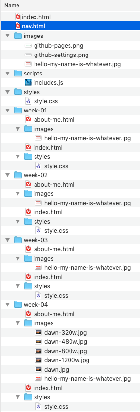
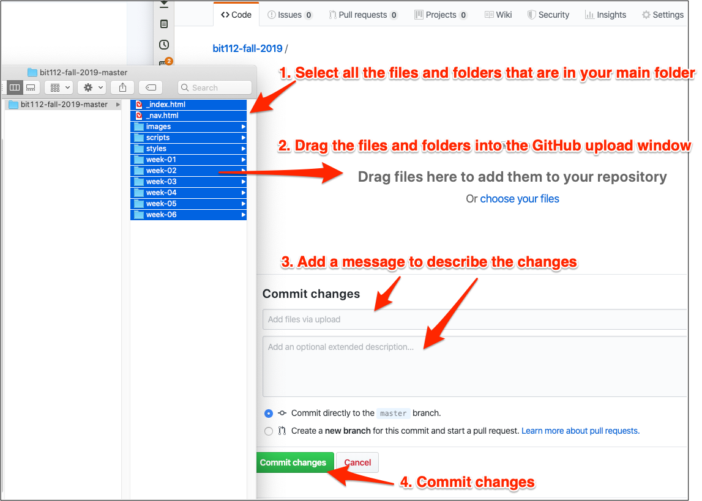

Since I'm suggesting but not requiring the Git setup in the Visual Code editor, that means not everyone will be using it.
The changes in folder structure from week 4 forward might be a bit confusing to people, so here is a picture of what that should look like.

At the very top of your site, there will be:
- an index.html file,
- a styles folder,
- and an images folder.
These are my files, so don't panic if you don't have an exact match. Depending on when you look at this, there might be things in this image that you don't have. For example, in week 6 we will add a nav.html file and a scripts folder, and from week 7 onward we might be adding more things on the top levels as well.
At the top level, there will be a folder for every week. Your weeks-1-3 will be in one folder, but after that there will be separate folders for week-04, week-05, week-06 etc.
Each week folder will start with a copy of the previous week's work. Each week folder will have at least:
- index.html file
- about-me.html file
- styles folder with style.css
- images folder
If you are using Visual Code and Git, keeping GitHub in sync with your class files on your computer should take just a couple clicks and typing in a description.
If you are using GitHub through a web browser, go to your repository and click "Upload files." Then drag all the files and folders in your web project folder into GitHub via your web browser. Here's a picture.
It's simplest to just drag everything. GitHub will sort out which files have changed and which are exactly the same, so you don't need to worry about that.
The following picture shows how it should look if you are adding to GitHub.com via a web browser.

Your main page in GitHub should now have the same contents as the folders and files on your computer. The topmost index.html and all the folders for all the weeks, as well as the root style and images and other folders.
I should be able to go to your main index.html page and follow links to each week's lab assignments.
As always, if any of this isn't clear, please tell me what's not obvious so I can fix it. Thanks!